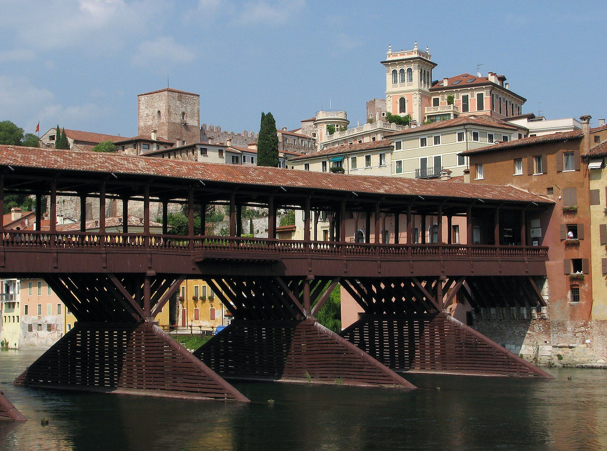
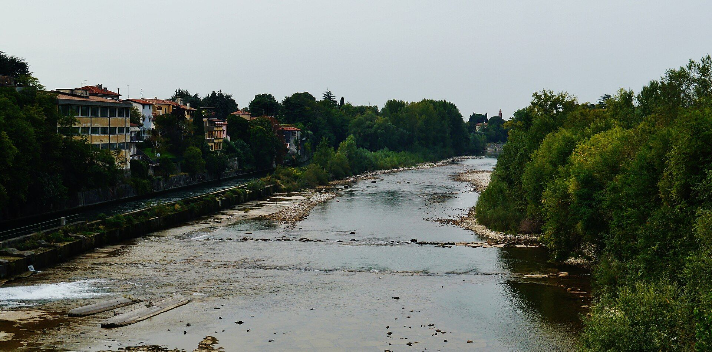
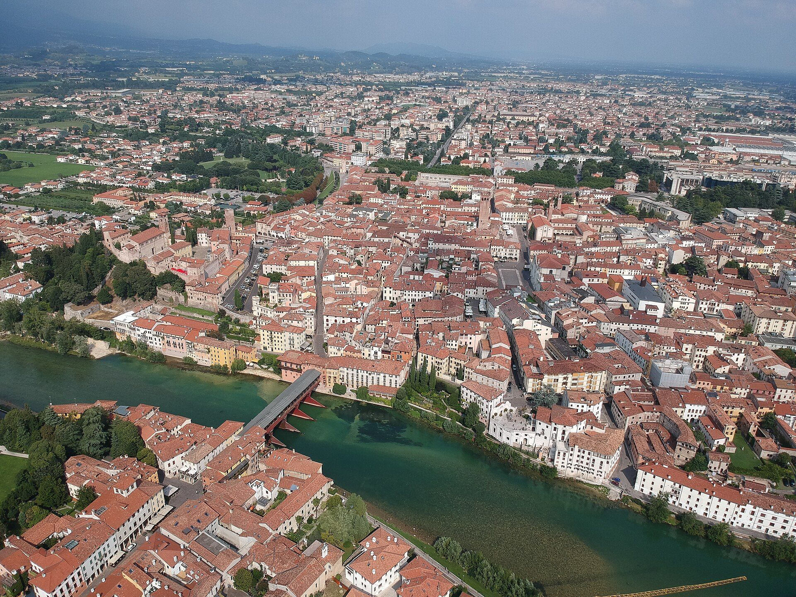

È questionedi batticuore
Studio dentistico della dott.ssa Giovanna Nadia Pavin, a Bassano del Grappa. Cure per tutta la famiglia.
Chiedi un appuntamentola paura si scioglie

Viale XI Febbraio 42/44, Bassano del Grappa
Dal lunedì al venerdì, 8:30 - 19:30

Esiste il batticuore che nasce dalla paura e quello che nasce dalla passione, dall'entusiasmo, dalla gioia. Il primo si scioglie appena entri nel nostro studio per la prima volta. Il secondo è quello che sentiamo noi per il nostro lavoro, e quello che auguriamo a te nei momenti più emozionanti della tua vita.
Curiamo i denti di tutta la famiglia: dalla prima visita dei bambini agli impianti e alle protesi. Per chi ha molta paura c'è anche la sedazione cosciente.
Le nostre cure, per tutta la famiglia
Chiedi un appuntamento- TuttiPrevenzioneControlli regolari per fermare i problemi prima che facciano male.Chiedi
- TuttiIgiene oraleLa pulizia professionale di denti e gengive, con i consigli per casa.Chiedi
- BambiniOdontoiatria infantileLe cure per i denti da latte e la prima visita, con calma.Chiedi
- AdultiEstetica del sorrisoForma e colore dei denti, per un sorriso che piace a te.Chiedi
- AdultiCosmesi dentalePiccoli ritocchi di colore e di forma sui denti visibili.Chiedi
- TuttiConservativaLa cura della carie e le otturazioni, per tenere il dente.Chiedi
- TuttiEndodonziaLa cura canalare, quando la polpa del dente è infiammata.Chiedi
- BambiniOrtodonzia dell'infanziaOrtodonzia specialistica per i bambini che crescono.Chiedi
- AdultiOrtodonzia dell'adultoOrtodonzia specialistica: non è mai troppo tardi per denti dritti.Chiedi
- AdultiChirurgia ortognaticaLa correzione della posizione delle ossa delle mascelle.Chiedi
- AdultiImplantologia convenzionaleUna radice in titanio al posto del dente che manca.Chiedi
- AdultiImplantologia a carico immediatoL'impianto con i denti fissati in tempi brevi, quando si può.Chiedi
- AdultiChirurgia maxillo faccialeGli interventi su bocca, mascelle e viso.Chiedi
- AdultiParodontologiaLa cura delle gengive e dell'osso che tiene fermi i denti.Chiedi
- TuttiSedazione coscientePer chi ha paura: resti sveglio, ma molto più tranquillo.Chiedi
- AdultiProtesi riabilitativaRidare denti che funzionano a chi ne ha persi.Chiedi
- AdultiProtesi esteticaCorone e faccette che si confondono con i denti veri.Chiedi
- TuttiGnatologiaLo studio di come chiudono i denti e lavorano le mascelle.Chiedi
- TuttiArticolazione temporo-mandibolareDolori e rumori della mandibola vicino all'orecchio.Chiedi
- TuttiPosturologiaIl legame tra il morso e la postura del corpo.Chiedi
- TuttiLogopediaDeglutizione e pronuncia, spesso insieme all'ortodonzia.Chiedi
Dicono di noi su Google: 4,6 su 5, 13 recensioni
“Professionali e competenti.
Organizzazione perfetta.”
Vincenzo V.5 stelle, ottobre 2022Recensione Google
“Frequento questo studio da più di 30 anni, la dottoressa Nadia è sempre stata accogliente e attenta al sorriso mio e della mia famiglia.”
“Personale competente e disponibile”
Dove siamo

Viale XI Febbraio 42/4436061 Bassano del Grappa
lun - ven 8:30 - 19:30
0424 522262 ScriviciAperti dal lunedì al venerdì, dalle 8:30 alle 19:30. Sabato e domenica chiuso.